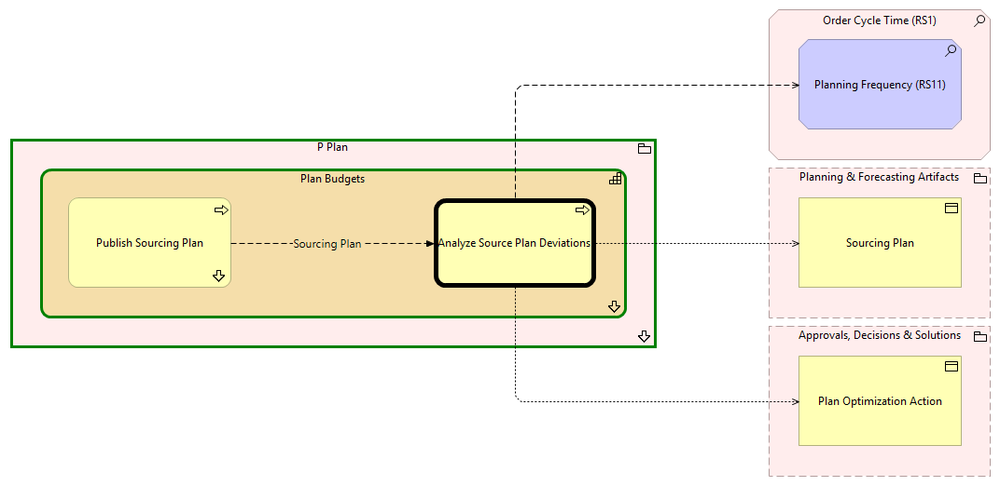

Analyze Source Plan Deviations - Context
(
)

generated_by
build_archi_xml.py::gen_proc_node_context_view
generator_path
pedro/capabilities/build_archi_xml_assign/build_archi_xml_assign.py
run_at
2026-10-19T21:01:51
view_type
process_context
P Plan
Plan Budgets
Publish Sourcing Plan
Publish Sourcing Plan - Context
Analyze Source Plan Deviations
Plan Budgets - Processes
P Plan - Processes
Order Cycle Time (RS1)
Planning Frequency (RS11)
Planning & Forecasting Artifacts
Sourcing Plan
Approvals, Decisions & Solutions
Plan Optimization Action
Sourcing Plan
Publish Sourcing Plan
Analyze Source Plan Deviations
Analyze Source Plan Deviations
Planning Frequency (RS11)
Analyze Source Plan Deviations
Sourcing Plan
Analyze Source Plan Deviations
Plan Optimization Action